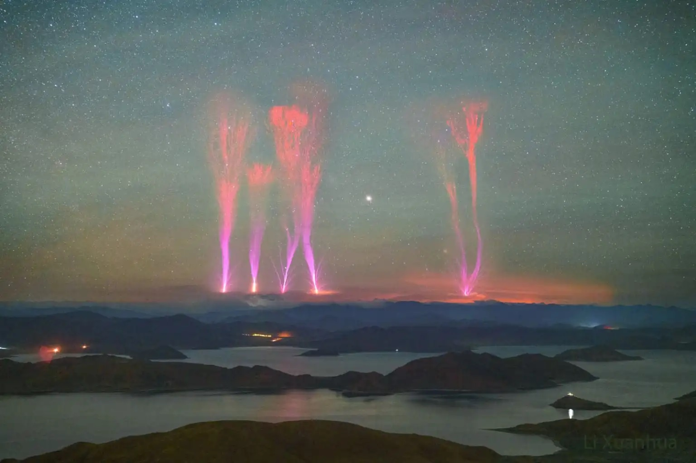

Inverted Lightning Phenomenon in the Himalayas Visible from Sikkim, India
Pic courtesy: NASA
In recent weeks, residents and visitors in Sikkim, India, have been treated to a rare and breathtaking natural phenomenon: inverted lightning illuminating the skies over the majestic Himalayas. This spectacular event has captivated the attention of both locals and scientists alike, offering a mesmerizing display of nature’s power and beauty.
Inverted lightning, also known as upward lightning, is a rare atmospheric event where lightning strikes originate from the ground and move upwards into the sky, rather than the typical downward path from clouds to the ground. This phenomenon is often triggered by tall structures such as mountains, towers, or skyscrapers during a thunderstorm.
The recent occurrences of inverted lightning in Sikkim have been particularly notable due to the region’s unique topography and weather patterns. The towering peaks of the Himalayas, combined with specific atmospheric conditions, create an ideal environment for this unusual type of lightning. The visuals have been nothing short of extraordinary, with bolts of lightning shooting upwards, creating a dramatic and awe-inspiring spectacle against the backdrop of the rugged mountain range.
For meteorologists and atmospheric scientists, the study of inverted lightning offers valuable insights into the complexities of thunderstorm dynamics and lightning formation. Observing and understanding these events can help improve weather prediction models and enhance our knowledge of electrical phenomena in the atmosphere.
Local residents have shared their experiences and photos on social media, capturing the beauty and rarity of the inverted lightning. One resident remarked, “It was like the mountains were sending sparks into the sky. I’ve never seen anything like it before; it was both eerie and beautiful.”
The phenomenon has also sparked interest among tourists and photographers, eager to witness and document the rare event. Sikkim, already known for its stunning landscapes and rich cultural heritage, has seen an uptick in visitors hoping to catch a glimpse of the inverted lightning.
The inverted lightning phenomenon in Sikkim is a reminder of the awe-inspiring and unpredictable nature of our planet’s weather systems. As scientists continue to study these events, they not only enhance our understanding of atmospheric science but also underscore the beauty and wonder of the natural world. For those lucky enough to witness it, the sight of lightning reaching up towards the heavens from the Himalayan peaks will be a memory to cherish forever.